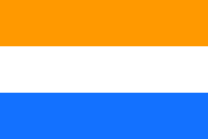
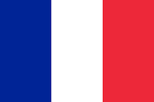

Chapter
1


Early Contact with the Europeans (15th-18th Century)
The earliest European contact with SEA was prompted mainly by the search for trading opportunities. This period lasted roughly from the 1400s to the 1700s.
Spice Trade
- Spices used to be only cultivable on the Spice Islands, in modern-day Indonesia
- Demand for these spices used to always exceed supply
- Spices like pepper and mace were thus very valuable
- Pepper was so valuable that it was named black gold (not oil you american bootlickers)
- Merchants could make huge profits from the spice trade.
4 main groups of Europeans to arrive in South-east Asia
- Portugese
- Dutch
- British
- French
Timeline of early European contact
1511The Portugese conquer and gain control of Melaka (Malacca). |

1602The Dutch East India Company (VOC) sets up a trading post in Java. |
1768The British East India Company (EIC) sets up a trading post in Penang. |

1859The French, under the orders of Napoleón III, conquers Saigon in Viet Nam. |
European interest in South-east Asia
Most early Europeans were not interested in
- European traders seldom intervened directly in local politics unless their trade was impacted
(free trade doctrine, the brits will use this as justification for colonialism somewhere down the line…) - Occupying territory was expensive (supplying soldiers etc.)
- High costs of waging wars
- Difficult logistics and adminstration due to distance
- European traders tended to co-operate with local rulers and establish only trading posts
Exceptions: - The Portugese, who loved to sack Malacca for some reason
- The Spanish, who conquered the Philippines